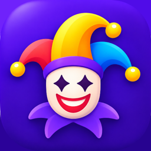
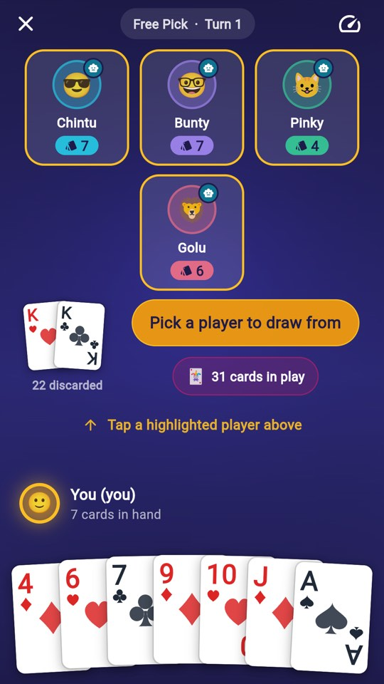
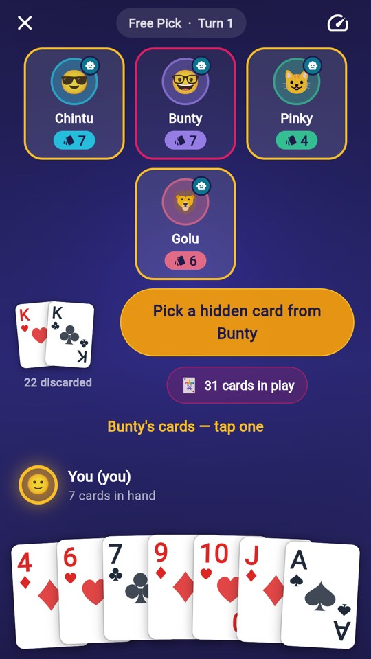
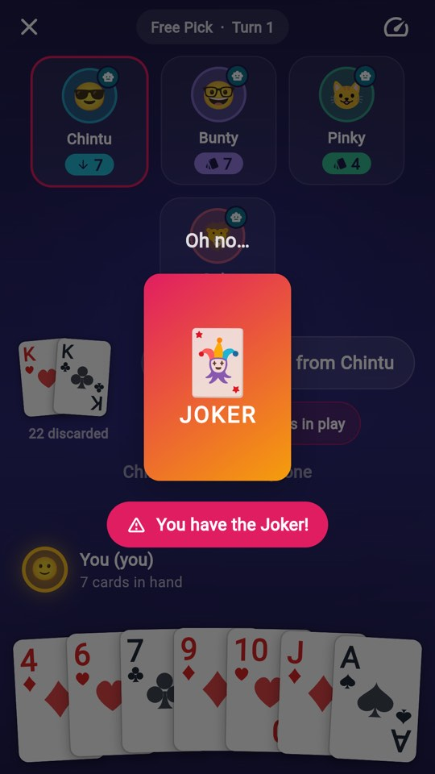
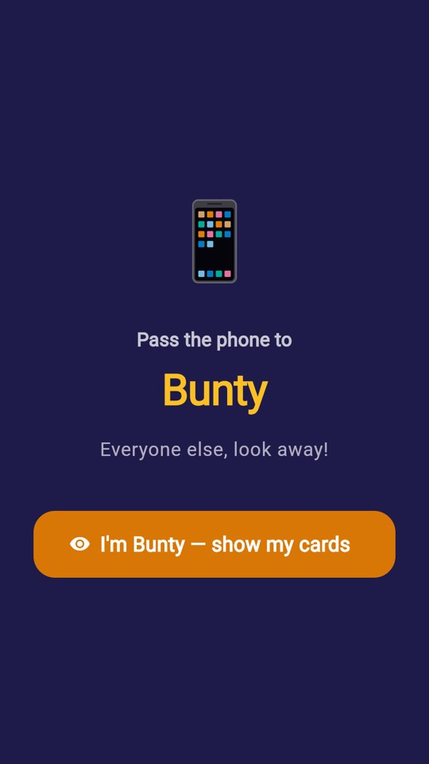
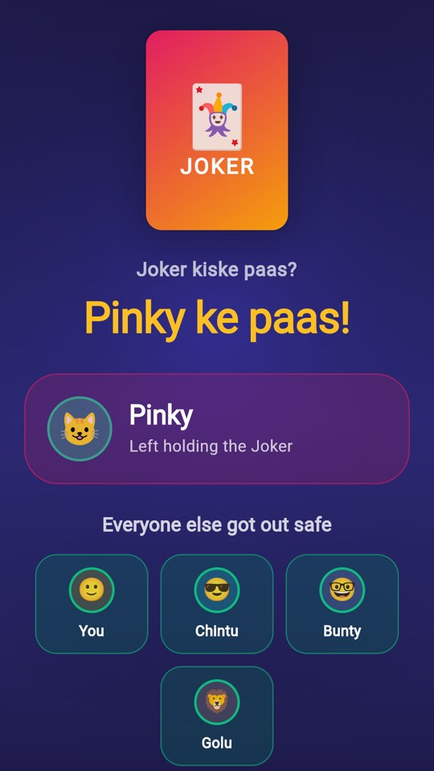

On Google Play
Pair up, pass it on — and don’t get caught holding the Joker.
It’s the card game you already know how to play. Everyone gets cards, pairs throw themselves away, and on your turn you take one face-down card from another player — hoping it isn’t the one nobody wants. Empty your hand and you’re out safe. Whoever is left holding the Joker at the end loses.
It is Old Maid: the game half the subcontinent grew up playing on the floor with a borrowed deck, built properly for a phone.
4 to 7 people, one phone, handed around the room. A privacy curtain covers every hand-off, so nobody sees a hand that isn’t theirs. This is the one to play when everyone is already sitting together.
You against the computer, any time, no one else needed. Three difficulty levels, and Hard genuinely is: those bots track where the Joker probably is, weigh their odds of making a pair, and will avoid knocking you out while you’re holding it.
You draw from the next player, clockwise. Pure luck, and pure nerve.
You choose who to draw from, then which card. Suddenly it matters who looks nervous, who is down to two cards, and who you’d rather not hand the Joker to.

Free Pick — choosing who to draw from.

Choosing one of their hidden cards.

“You have the Joker!”

The pass-and-play privacy curtain.

“Pinky ke paas!”
Two cards of the same rank make a pair and go straight to the discard pile — automatically, as soon as you hold both. The deck has 53 cards: 52 and one Joker, so everything can pair up except the Joker.
Four to seven in Pass & Play, on one phone. Solo vs Bots fills the other seats for you.
No. This version plays entirely on your device — passing one phone around, or against the built-in computer opponents. It makes no network requests at all.
No. The game has no in-app purchases and no advertising.
Not yet. Playing over the internet is built but not switched on in the released app, and there is no server running for it — the in-app screen says as much. If that changes, it will be announced here and the privacy policy will be updated before it ships.